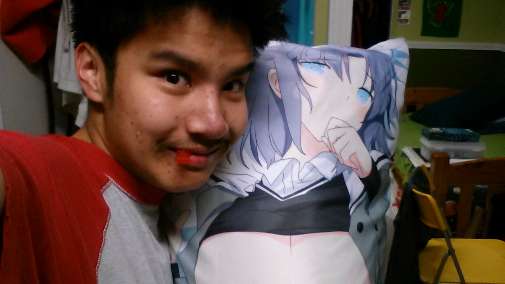

My name is Marc Vicente. As stated earlier, I’m currently a student artist at Cal State East Bay who hopes to use his casual gaming skills to create the next big Trading Card Game. I live with my parents and my twin brother Mike, who goes to a separate school than me.
I sometimes choose to go under different monikers like "Marxster", "Mou", and sometimes the "Burning-hot Devil". The moniker “Burning-hot Devil" comes from my usual affiliation with the Fire and Darkness elements generally from when I play a game. I primarily create art, and most of it is inspired by cartoons and games that I like. My favorite things to draw can range from cute child-like monsters to sexy voluptuous women.
My other hobbies include playing trading card games and sports, listening to various types of music (my favorite genres are Rock and Japanese music), collecting toys as a hobby and watching anime/cartoons. Some of my favorite shows and games include soccer, table tennis, “Cardfight!! Vanguard”, “Yu-Gi-Oh!”, “Pokemon”, “Omamori Himari”, “Senran Kagura”, "TOME: Terrain of Magical Expertise”, “Unison League”, and “Custom Robo”.
The trading card games I actively play are Yu-Gi-Oh! and Cardfight!! Vanguard. I play Pokémon (both the Trading Card Game and the latest game Pokémon Sun), Duel Masters, and other various games on the sidelines. I also like to play Future Card Buddyfight and Battle Spirits, but I do not have a deck for either of them in real life, so I play them (and others) on TradeCardsOnline as "marxster." If you find me there, you can always feel free to challenge me!
Aside from trading card games and art, I am actually a pretty quirky guy. I like to compete with others (primarily through trading card games and video games, but also through sports like table tennis and soccer), listen to a wide variety of music (although I'm not a big fan of many of the big hits today), and I somehow have a lot to talk about for an "antisocial person."
In short, I'm a student artist who is mainly fueled by my nerdy interests and my open mindset. I'm also told by others sometimes that I'm like a living cartoon character!